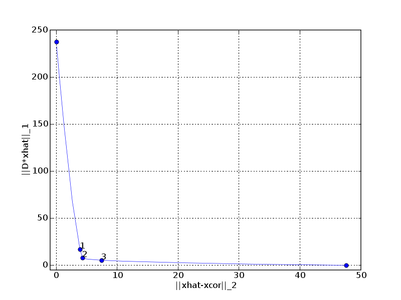
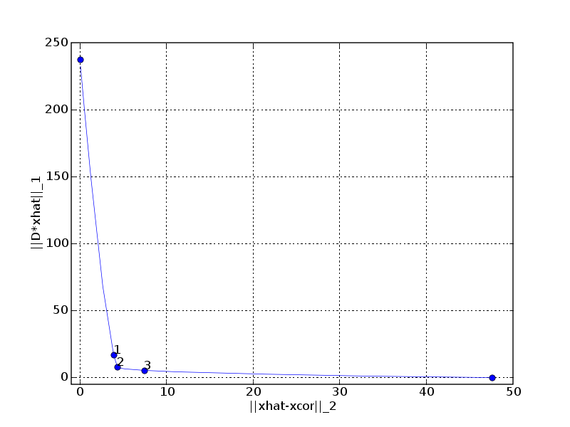

Total variation reconstruction (fig. 6.11-6.14)¶

 


# Figures 6.11-14, pages 315-317.
# Total variation reconstruction.
from math import pi
from cvxopt import blas, lapack, solvers
from cvxopt import matrix, spmatrix, sin, mul, div, normal
solvers.options['show_progress'] = 0
try: import pylab
except ImportError: pylab_installed = False
else: pylab_installed = True
n = 2000
t = matrix( list(range(n)), tc='d' )
ex = matrix( n//4*[1.0] + n//4*[-1.0] + n//4*[1.0] + n//4*[-1.0] ) + \
0.5 * sin( 2.0*pi/n * t )
corr = ex + 0.1 * normal(n,1)
if pylab_installed:
pylab.figure(1, facecolor='w', figsize=(8,5))
pylab.subplot(211)
pylab.plot(t, ex)
pylab.ylabel('x[i]')
pylab.xlabel('i')
pylab.axis([0, 2000, -2, 2])
pylab.title('Original and corrupted signal (fig. 6.11)')
pylab.subplot(212)
pylab.plot(t, corr)
pylab.ylabel('xcor[i]')
pylab.xlabel('i')
pylab.axis([0, 2000, -2, 2])
# Quadratic smoothing.
# A = D'*D is an n by n tridiagonal matrix with -1.0 on the
# upper/lower diagonal and 1, 2, 2, ..., 2, 2, 1 on the diagonal.
Ad = matrix([1.0] + (n-2)*[2.0] + [1.0])
As = matrix(-1.0, (n-1,1))
nopts = 100
deltas = -10.0 + 20.0/(nopts-1) * matrix(list(range(nopts)))
cost1, cost2 = [], []
for delta in deltas:
xr = +corr
lapack.ptsv(1.0 + 10**delta * Ad, 10**delta * As, xr)
cost1 += [blas.nrm2(xr - corr)]
cost2 += [blas.nrm2(xr[1:] - xr[:-1])]
# Find solutions with ||xhat - xcorr || roughly equal to 4, 7, 10.
mv1, k1 = min(zip([abs(c - 10.0) for c in cost1], range(nopts)))
xr1 = +corr
lapack.ptsv(1.0 + 10**deltas[k1] * Ad, 10**deltas[k1] * As, xr1)
mv2, k2 = min(zip([abs(c - 7.0) for c in cost1], range(nopts)))
xr2 = +corr
lapack.ptsv(1.0 + 10**deltas[k2] * Ad, 10**deltas[k2] * As, xr2)
mv3, k3 = min(zip([abs(c - 4.0) for c in cost1], range(nopts)))
xr3 = +corr
lapack.ptsv(1.0 + 10**deltas[k3] * Ad, 10**deltas[k3] * As, xr3)
if pylab_installed:
pylab.figure(2, facecolor='w')
pylab.plot(cost1, cost2, [blas.nrm2(corr)], [0], 'bo',
[0], [blas.nrm2(corr[1:] - corr[:-1])], 'bo')
pylab.plot([cost1[k1]], [cost2[k1]], 'bo',
[cost1[k2]], [cost2[k2]], 'bo', [cost1[k3]], [cost2[k3]], 'bo')
pylab.text(cost1[k1], cost2[k1], '1')
pylab.text(cost1[k2], cost2[k2], '2')
pylab.text(cost1[k3], cost2[k3], '3')
pylab.title('Optimal trade-off curve (quadratic smoothing)')
pylab.xlabel('|| xhat - xcor ||_2')
pylab.ylabel('|| D*xhat ||_2')
pylab.axis([-0.4, 50, -0.1, 8.0])
pylab.grid()
pylab.figure(3, facecolor='w', figsize=(8,7.5))
pylab.subplot(311)
pylab.plot(t, xr1)
pylab.axis([0, 2000, -2.0, 2.0])
pylab.ylabel('xhat1[i]')
pylab.title('Three quadratically smoothed sigals (fig. 6.12).')
pylab.subplot(312)
pylab.plot(t, xr2)
pylab.ylabel('xhat2[i]')
pylab.axis([0, 2000, -2.0, 2.0])
pylab.subplot(313)
pylab.plot(t, xr3)
pylab.axis([0, 2000, -2.0, 2.0])
pylab.ylabel('xhat3[i]')
pylab.xlabel('i')
#print "Close figures to start total variation reconstruction."
#pylab.show()
# Total variation smoothing.
#
# minimize (1/2) * ||x-corr||_2^2 + delta * || D*x ||_1
#
# minimize (1/2) * ||x-corr||_2^2 + delta * 1'*y
# subject to -y <= D*x <= y
#
# Variables x (n), y (n-1).
def tv(delta):
"""
minimize (1/2) * ||x-corr||_2^2 + delta * sum(y)
subject to -y <= D*x <= y
Variables x (n), y (n-1).
"""
q = matrix(0.0, (2*n-1,1))
q[:n] = -corr
q[n:] = delta
def P(u, v, alpha = 1.0, beta = 0.0):
"""
v := alpha*u + beta*v
"""
v *= beta
v[:n] += alpha*u[:n]
def G(u, v, alpha = 1.0, beta = 0.0, trans = 'N'):
"""
v := alpha*[D, -I; -D, -I] * u + beta * v (trans = 'N')
v := alpha*[D, -I; -D, -I]' * u + beta * v (trans = 'T')
For an n-vector z, D*z = z[1:] - z[:-1].
For an (n-1)-vector z, D'*z = [-z;0] + [0; z].
"""
v *= beta
if trans == 'N':
y = u[1:n] - u[:n-1]
v[:n-1] += alpha*(y - u[n:])
v[n-1:] += alpha*(-y - u[n:])
else:
y = u[:n-1] - u[n-1:]
v[:n-1] -= alpha * y
v[1:n] += alpha * y
v[n:] -= alpha * (u[:n-1] + u[n-1:])
h = matrix(0.0, (2*(n-1),1))
# Customized solver for KKT system with coefficient
#
# [ I 0 D' -D' ]
# [ 0 0 -I -I ]
# [ D -I -D1 0 ]
# [ -D -I 0 -D2 ].
# Diagonal and subdiagonal.
Sd = matrix(0.0, (n,1))
Se = matrix(0.0, (n-1,1))
def Fkkt(W):
"""
Factor the tridiagonal matrix
S = I + 4.0 * D' * diag( d1.*d2./(d1+d2) ) * D
with d1 = W['di'][:n-1]**2 = diag(D1^-1)
d2 = W['di'][n-1:]**2 = diag(D2^-1).
"""
d1 = W['di'][:n-1]**2
d2 = W['di'][n-1:]**2
d = 4.0*div( mul(d1,d2), d1+d2)
Sd[:] = 1.0
Sd[:n-1] += d
Sd[1:] += d
Se[:] = -d
lapack.pttrf(Sd, Se)
def g(x, y, z):
"""
Solve
[ I 0 D' -D' ] [x[:n] ] [bx[:n] ]
[ 0 0 -I -I ] [x[n:] ] = [bx[n:] ]
[ D -I -D1 0 ] [z[:n-1] ] [bz[:n-1] ]
[ -D -I 0 -D2 ] [z[n-1:] ] [bz[n-1:] ].
First solve
S*x[:n] = bx[:n] + D' * ( (d1-d2) ./ (d1+d2) .* bx[n:]
+ 2*d1.*d2./(d1+d2) .* (bz[:n-1] - bz[n-1:]) ).
Then take
x[n:] = (d1+d2)^-1 .* ( bx[n:] - d1.*bz[:n-1]
- d2.*bz[n-1:] + (d1-d2) .* D*x[:n] )
z[:n-1] = d1 .* (D*x[:n] - x[n:] - bz[:n-1])
z[n-1:] = d2 .* (-D*x[:n] - x[n:] - bz[n-1:]).
"""
# y = (d1-d2) ./ (d1+d2) .* bx[n:] +
# 2*d1.*d2./(d1+d2) .* (bz[:n-1] - bz[n-1:])
y = mul( div(d1-d2, d1+d2), x[n:]) + \
mul( 0.5*d, z[:n-1]-z[n-1:] )
# x[:n] += D*y
x[:n-1] -= y
x[1:n] += y
# x[:n] := S^-1 * x[:n]
lapack.pttrs(Sd, Se, x)
# u = D*x[:n]
u = x[1:n] - x[0:n-1]
# x[n:] = (d1+d2)^-1 .* ( bx[n:] - d1.*bz[:n-1]
# - d2.*bz[n-1:] + (d1-d2) .* u)
x[n:] = div( x[n:] - mul(d1, z[:n-1]) -
mul(d2, z[n-1:]) + mul(d1-d2, u), d1+d2 )
# z[:n-1] = d1 .* (D*x[:n] - x[n:] - bz[:n-1])
# z[n-1:] = d2 .* (-D*x[:n] - x[n:] - bz[n-1:])
z[:n-1] = mul(W['di'][:n-1], u - x[n:] - z[:n-1])
z[n-1:] = mul(W['di'][n-1:], -u - x[n:] - z[n-1:])
return g
return solvers.coneqp(P, q, G, h, kktsolver = Fkkt)['x'][:n]
nopts = 15
deltas = -3.0 + (3.0-(-3.0))/(nopts-1) * matrix(list(range(nopts)))
cost1, cost2 = [], []
for delta, k in zip(deltas, range(nopts)):
xtv = tv(10**delta)
cost1 += [blas.nrm2(xtv - corr)]
cost2 += [blas.asum(xtv[1:] - xtv[:-1])]
mv1, k1 = min(zip([abs(c - 20.0) for c in cost2], range(nopts)))
xtv1 = tv(10**deltas[k1])
mv2, k2 = min(zip([abs(c - 8.0) for c in cost2], range(nopts)))
xtv2 = tv(10**deltas[k2])
mv3, k3 = min(zip([abs(c - 5.0) for c in cost2], range(nopts)))
xtv3 = tv(10**deltas[k3])
if pylab_installed:
pylab.figure(4, facecolor='w', figsize=(8,5))
pylab.subplot(211)
pylab.plot(t, ex)
pylab.ylabel('x[i]')
pylab.xlabel('i')
pylab.axis([0, 2000, -2, 2])
pylab.title('Original and corrupted signal (fig. 6.11)')
pylab.subplot(212)
pylab.plot(t, corr)
pylab.ylabel('xcor[i]')
pylab.xlabel('i')
pylab.axis([0, 2000, -2, 2])
pylab.figure(5, facecolor='w') #figsize=(8,7.5))
pylab.plot(cost1, cost2, [blas.nrm2(corr)], [0], 'bo',
[0], [blas.asum(corr[1:] - corr[:-1])], 'bo')
pylab.plot([cost1[k1]], [cost2[k1]], 'bo', [cost1[k2]], [cost2[k2]], 'bo',
[cost1[k3]], [cost2[k3]], 'bo')
pylab.text(cost1[k1], cost2[k1],'1')
pylab.text(cost1[k2], cost2[k2],'2')
pylab.text(cost1[k3], cost2[k3],'3')
pylab.grid()
pylab.axis([-1, 50, -5, 250])
pylab.xlabel('||xhat-xcor||_2')
pylab.ylabel('||D*xhat||_1')
pylab.title('Optimal trade-off curve (fig. 6.13)')
pylab.figure(6, facecolor='w', figsize=(8,7.5))
pylab.subplot(311)
pylab.plot(t, xtv1)
pylab.axis([0, 2000, -2.0, 2.0])
pylab.ylabel('xhat1[i]')
pylab.title('Three reconstructed signals (fig. 6.14)')
pylab.subplot(312)
pylab.plot(t, xtv2)
pylab.ylabel('xhat2[i]')
pylab.axis([0, 2000, -2.0, 2.0])
pylab.subplot(313)
pylab.plot(t, xtv3)
pylab.axis([0, 2000, -2.0, 2.0])
pylab.ylabel('xhat3[i]')
pylab.xlabel('i')
pylab.show()